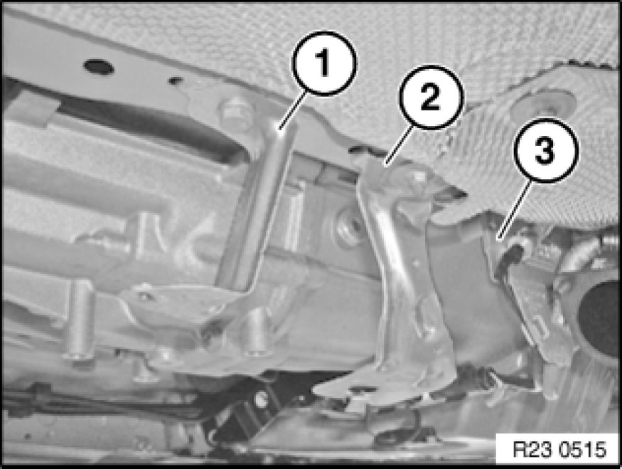
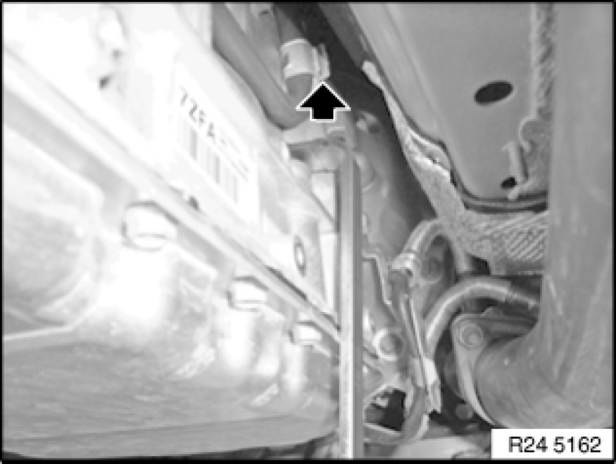

Replacing Sealing Plug (GA6L45R)
24 11 007 - Replacing sealing plug (GA6L45R)

Special tools required:
- 24 4 340 24 4 340 Lever

Important!
After completion of work, check transmission oil level Procedures.
Use only the approved transmission fluid.
Failure to comply with this requirement will result in serious damage to the automatic transmission!

Necessary preliminary tasks:
- Remove rear underbody protection

Remove holder (2).

Unlock sealing plug with special tool 24 4 340 24 4 340 Lever in direction of arrow and remove.